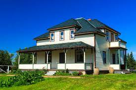
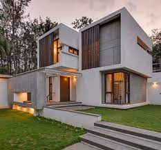
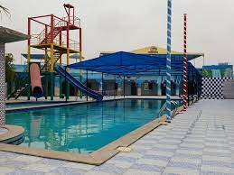

karachi the metropolitan city of pakistan is known for its live liness , rich culture , yummy cuisine scenic views ,and of course extravagant farmhouses
during the past few yeasrs , the trend of building and using farmhouse is increasing by leaps and bounds. people are not only using farmhouse to grow organic produce but they are also using farmhouses to throw lavish parties and festive weddings.
This article will give you can idea of different farmhouses in karachi so that you can choose the one best suited for your needs.

Arabian farmhouse is another great option located at the heart of karachi. located at super highway near the baqai university, arabian farmhouses in karachi.
ADRESS: malir,karachi City,sindh.
If you want to relax and spend a good day with your friends and family this farmhouse is a perfect picnic spot for you. at the farmhouse you can enjoy a private park playing area swimmimg pools and a big resort where every essential need is provided. if you have a knack for the history you should not miss visiting historical places in pakistan also, check out a list of cinemas in karachi, that you can visit with your family and friends to enjoy a good day.

Rani empire resort located at the prime location of malir, this farmhouse is poles apart from rradiotional farmhouse and for all the rights reasons. the farmhouse has a 9 hole golf course, an aqua room, an auditorium a mini zoo with exotic fauna such as llamas pony horses ostriches and the list goes on.
ADRESS: Abdul Kareem Gadap Near Baqai cadet college karachi City, sindh.
AL siraj farmhouse another excellent option for the residents of karachi and its adjacent areas is A1 siraj farmhouse. the farmhouse is providing exceptional services to the masses for quite a long time now. the farmhouse has different categories depending on the personal preferences of the people
if u want to spend some quality time with your friends and family members in a quiet and serence place, book a vip farmhouse now. from the covered swimming pool bbq to indoor games the vip farmhouse has everything for you.

IF you are looking for a perfect place for family gatherings, corporate picnics, BBQ parties, birthday parties basalts, dholki and others events a deluxe farmhouse is a perfect option for you. many educational institutions opt deluxe farmhouse for trips and fun activities.
ADRESS: house survey NO.272,275, soomair kanchi road, near memon goth taluka gadap town district malir karachi.
$ CREATED BY SUBHAN KHAN $